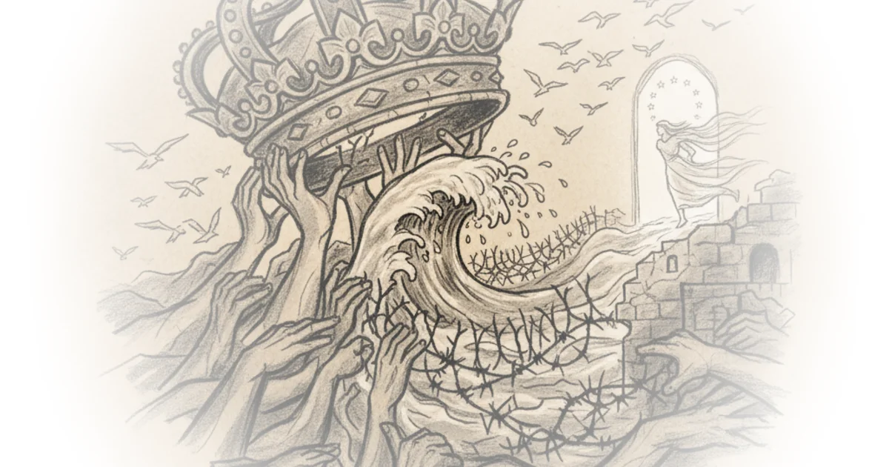

What it really means to "write in the dark" Jeannine Ouellette · Writing in the Dark ·Apr 15, 2026 · 13 min read · Writing & Craft
‘My diocese is the poor’: Archbishop Marín on his plans as papal almoner Various · The Pillar ·Apr 15, 2026 · 19 min read · Faith
Claim that UT engaged in viewpoint discrimination in forbidding 2024 Palestine solidarity… Various · Reason ·Apr 15, 2026 · 10 min read · Law & Rights
Strait of Hormuz blockade: How China should respond Various · Sinification ·Apr 15, 2026 · 29 min read · China
From paper engines to winning engines Zichen Wang · Pekingnology ·Apr 15, 2026 · 14 min read · Sports
Exclusive poll: Michigan’s Dem Senate race is wide open, AIPAC is toxic, Hasan Piker is not Mehdi Hasan · Zeteo ·Apr 15, 2026 · 10 min read · Political Strategy
PM Pedro Sánchez’s Tsinghua speech: A masterclass in diplomatic rhetoric Kaiser Kuo · Sinica ·Apr 14, 2026 · 17 min read · Foreign Policy
How spousal preferences impact career outcomes of men and women Various · Nominal News ·Apr 14, 2026 · 13 min read · Economics
Blessed Peter, Paul III, and … everything else Various · The Pillar ·Apr 14, 2026 · 12 min read · Faith
AI might be killing traditional SIEMs, but data advantage is as strong as ever Ross Haleliuk · Venture in Security ·Apr 14, 2026 · 12 min read · AI & Tech
Chinese reactions to Claude mythos Jordan Schneider · ChinaTalk ·Apr 14, 2026 · 14 min read · AI & Tech
The strange ways people act—and how evolution explains them Yascha Mounk · Persuasion ·Apr 14, 2026 · 19 min read · Science
Is the administration investigating the NFL because he failed to buy a team so many times? Various · Reason ·Apr 14, 2026 · 11 min read · NFL
It's the prices, stupid G. Elliott Morris · G. Elliott Morris ·Apr 14, 2026 · 18 min read · Economics
The new face of the French right Various · Compact Magazine ·Apr 14, 2026 · 16 min read · Media Criticism
A bad tick season, cdc rabies testing paused, plus a new measles epicenter, stomach flu, and a late… Katelyn Jetelina · Your Local Epidemiologist ·Apr 14, 2026 · 10 min read · Public Health
In praise of (some) compartmentalization Cory Doctorow · Pluralistic ·Apr 14, 2026 · 14 min read · Writing & Craft
In praise of (some) compartmentalization Cory Doctorow · Pluralistic ·Apr 14, 2026 · 14 min read · Writing & Craft
Moldova leaves the CIS, LPA reform, and more David Smith · Moldova Matters ·Apr 14, 2026 · 16 min read · History
A federal judge dismisses the administration’s defamation lawsuit against the Wall Street Journal Various · Reason ·Apr 13, 2026 · 10 min read · Law & Rights
Why the administration would want Pope Leo to be political Various · The Pillar ·Apr 13, 2026 · 10 min read · Faith
How Péter Magyar won Yascha Mounk · Persuasion ·Apr 13, 2026 · 12 min read · Political Strategy 
The “Greater-than-Expected” impact of the Iran war on China’s economy Various · Sinification ·Apr 13, 2026 · 35 min read · China
Lawsuit against OpenAI for allegedly fueling user's delusions, leading him to harass plaintiff Various · Reason ·Apr 13, 2026 · 16 min read · AI & Tech